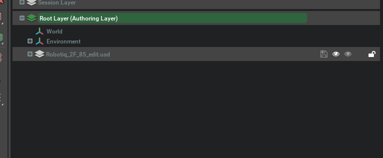
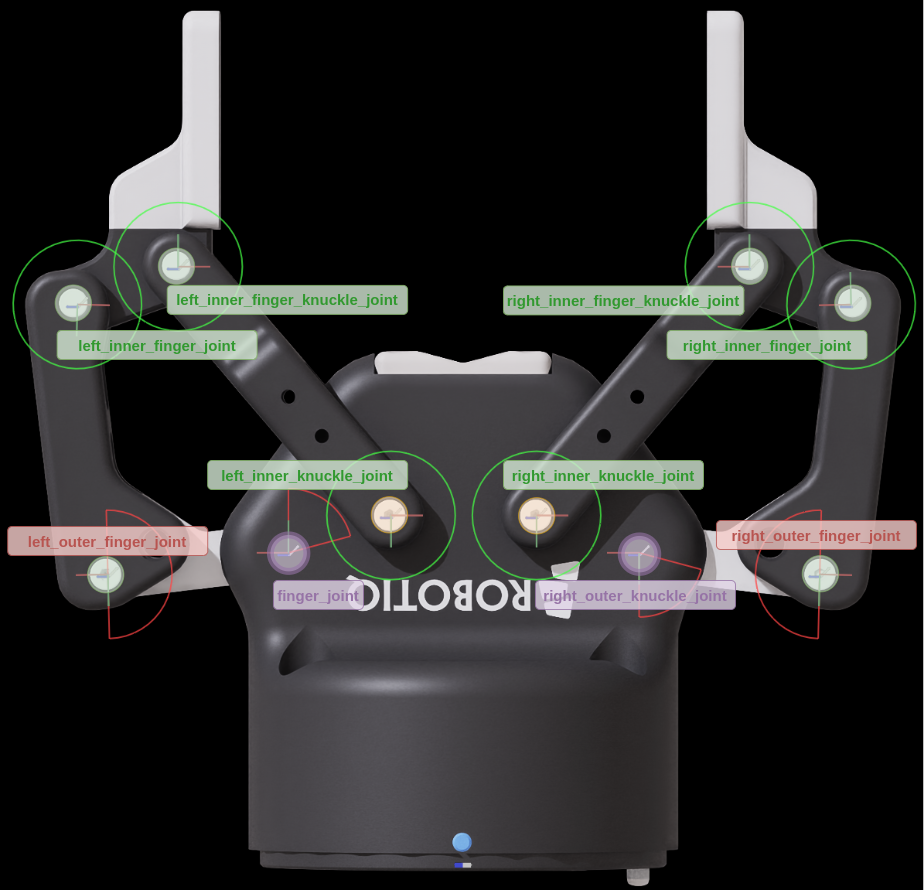
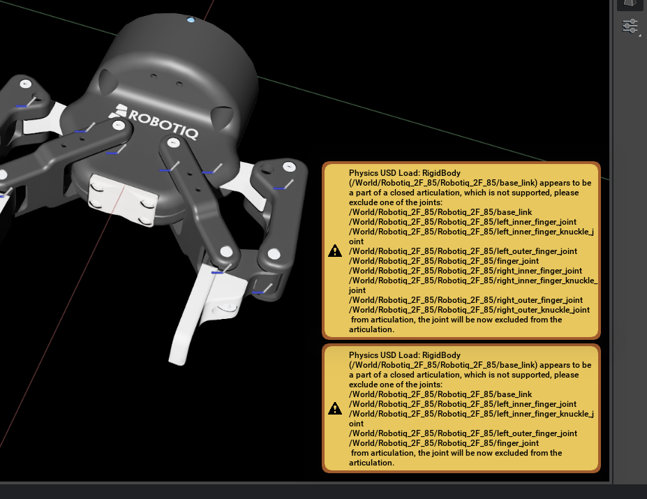
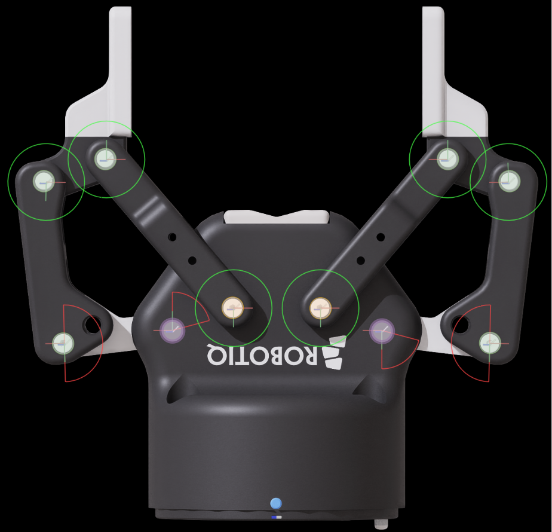
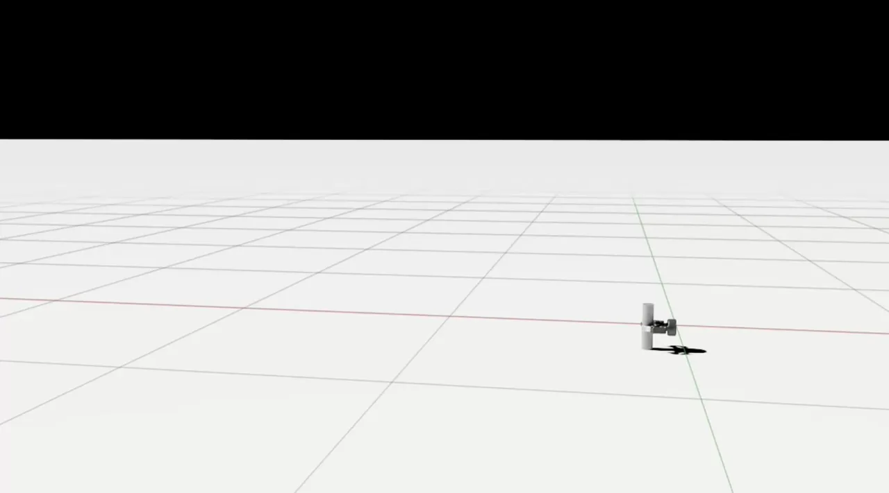
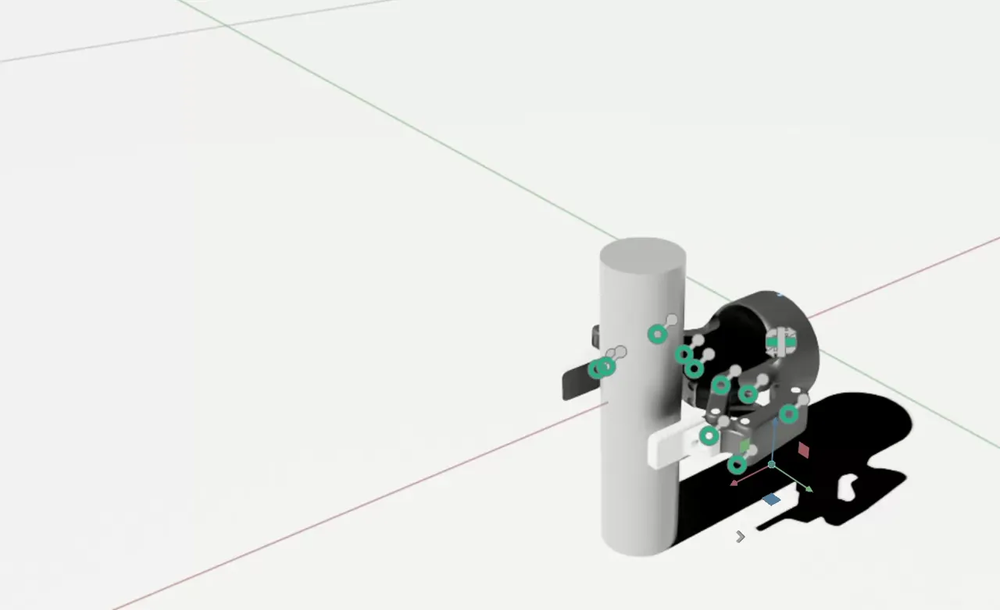
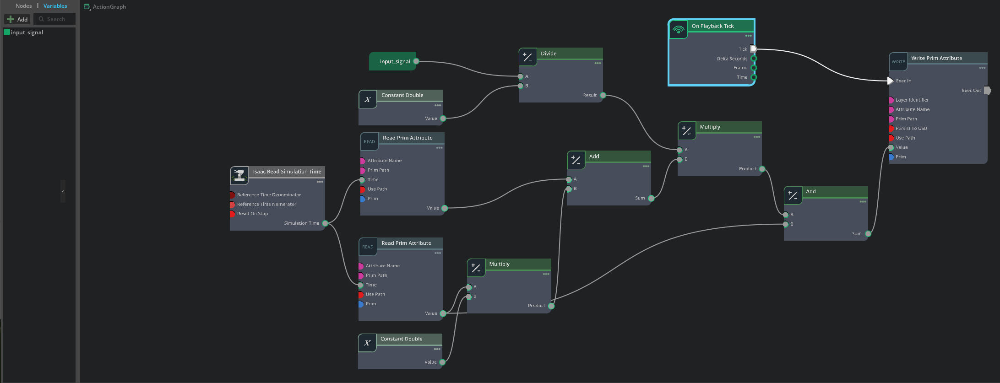
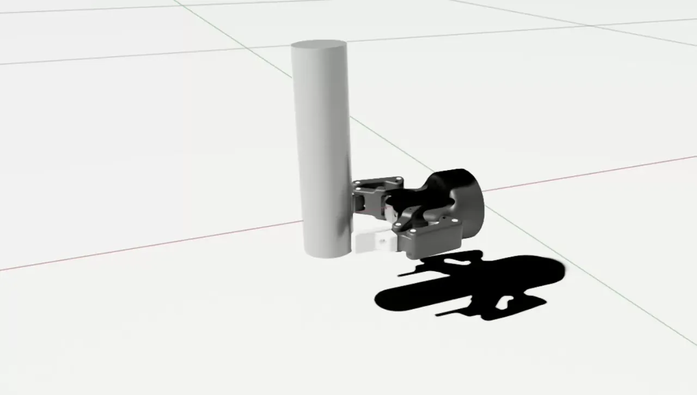

Tutorial 10: Rig Closed-Loop Structures#
Some models are challenging to represent. Robots and grippers still have unique features and structures that are uncommon. In this document you learn some techniques to model these unique features and learn a general approach for managing these unique configurations.
Learning Objectives#
In this tutorial, you will:
Use USD Layers to edit and test assets
Add materials and adjust joints post CAD import
Break a closed loop articulation chain
Add joint drives, including mimic joints
Adjust collision shapes
Test grippers by building a test setup and using a gripper controller OmniGraph
30 Minutes Tutorial
Start with a Robotiq 2F-85 Parallel Gripper STP file imported into an Onshape document and with joints modeled. This tutorial does not directly cover tuning the joints. Instead, tuned parameters are provided when configuring the asset. To learn more about gains tuning see Tutorial 11: Tuning Joint Drive Gains and Gain Tuner Extension.
Getting Started#
Prerequisite
Complete the Quick Tutorials series to learn the basic core concepts of how to navigate inside NVIDIA Isaac Sim.
Complete the Assemble a Simple Robot and Adding Sensors and Cameras tutorials to learn the concepts of rigid body API, collision API, joints, drives, and articulations.
Read Onshape importer and watch the videos on rigging the robot in Onshape.
Have a version of the Robotiq 2F-85 Gripper imported in Onshape and model the joints that connect the fingers together and to the body.
Note
The Onshape document used in this tutorial is publicly available. The imported USD asset is located at Samples/Rigging/Gripper/Robotiq 2F-85 to get started.
Rigging the Robot#
Using Layers to Edit and Test an Asset#
All the rigid body, masses, and joint definition are done in Onshape. After they are imported to Isaac Sim, the asset contains basic joint information and rigid body setup. You must complete a few additional steps to make the asset fully functional.
Instead of opening the original asset, edit the asset using layers. Layers allow for building a scene on top of a root asset and saving it without changing the underlying root layer assets. For example, you can add a ground plane and objects used to test the gripper, save the testing setup in the layers, while keeping the original gripper asset free of any extraneous items used for testing.
Create a new stage without the reference added during import.
Save this stage with the name
Robotiq_2F_85_config.usdat the same folder as the imported assets (you can locate the source file in the Reference or Payload section on the Property panel, and click the “Locate file” icon).Open the layer tab and drag the
Robotiq_2F_85_edit.usdin the Root Layer.
There is also a file named Robotiq_2F_85_base.usd in the source folder. This is the clean stage post import from Onshape and must not be directly edited to facilitate updates when the asset is re-imported from Onshape.

The Authoring layer is where changes are saved. To switch between layers, double-click on the choice.
If changes are made in the wrong authoring layer, you can drag the prims with the delta between layers to merge them into the receiving layer. Use this to your benefit by first authoring everything in the Root layer. After you are satisfied, you can drag your updates to the Robotiq_2F_85_edit.usd layer.
This is how the joints were named for this asset:
{kind=link}

Note
Remember to combine parts that make rigid bodies on Group Mates before importing, to simplify the rigid bodies on stage (also useful for renaming the fingers to left_finger_... and right_finger_...).
Adjusting Joints Post Import#
Sometimes a limitation with the Onshape Client API causes the joints to become flipped 180 degrees from the drawing. To fix that, select the joints that are flipped, and apply an equal 180 degrees offset in Rotation 0 and Rotation 1 X axis. With the asset you imported, this was the case on the four joints.
The joints [left, right]_outer_finger_joint require limits [0,180] and [finger_joint, right_outer_knuckle_joint] require limits [0, 75]. Leave all other joints unconstrained.
Add fingertip physics material to increase the friction contact:
Open the Menu Create > Physics > Physics Material.
Select Rigid Body Material.
Rename the material to
fingertip_material.Set both friction coefficients to 0.8 (default rubber) and Friction Combine Mode
max.Select
right_inner_fingerandleft_inner_finger. In the Property tab, in Materials on selected models pick the created material.
Note
you may need to de-select instanceable for the two xforms in right/left_inner_finger, and set the physics materials on the mesh Defeatured_2F_85_PAD_OPEN_fingertipsstep directly.
Breaking the Articulation Loop#
If you try to simulate this asset now, you’ll get two big warnings on the screen:
{kind=link}

For more information, see Physics Simulation Fundamentals. Articulations must be kinematic trees, but there is no need to delete any joints. To eliminate those warnings, you must choose one joint to exclude from the Articulation and have it be treated as a maximal coordinate joint. Because maximal coordinate joints are treated with a lower priority by the solver, it is the joint that accumulates the most error in simulation.
In terms of simulation efficiency, the best choice of joint to exclude from articulation is the one that minimizes the length of articulations. However, you must also consider utility. The best joint to remove is the one that interferes the least with the robot functionality. In an ideal scenario, the joint to exclude from articulation only serves as a spatial constraint. Identify a joint with no limits, no resistance, and no drive. If there are no joints that meet this criterion, transfer these attributes to the adjacent joints before removing it from articulation.
In the case of this gripper, the best options to remove from the articulation are the joints that connect the inner shafts to the gripper body (the inner_knuckle_joint, highlighted in orange in the image).
To remove the joints from the articulation, select the
left_inner_knuckle_jointandright_inner_knuckle_jointprims.In the Joint section under physics, select Exclude From Articulation.
{kind=link}

Note
The fully completed asset is located in the Samples/Rigging/Gripper/Robotiq 2F-85_complete folder.
Preparing For Tests#
Because the gripper is not connected to anything to move it and test its physical properties, add a structure to later help us test the stability of the gripper:
Create two Xforms and add the Rigid Body API to them.
Add a fixed joint from world to the first Xform.
Add a Prismatic Joint from the first Xform to the second Xform.
Add a second prismatic joint from the second Xform to base_link.
Add a drive to the prismatic joints so that you can lift and move forward with a position command.
In the drives set the following:
In the Advanced properties for the joint, set a maximum joint velocity of 5.0.
Set the joint limits to [0, 1].
In the joint drive, set the following:
Damping: 10000.0
Stiffness: 10000.0
Make sure to move all joints that were just created outside of the Robotiq_2f_85 prim.
To assist in checking the grip:
Create a Cylinder and scale it to
[0.05, 0.05, 0.2].Place the cylinder at
X=0.12.Set the cylinder collider to
Convex Hull.Create a ground plane and move it to
Z=-0.1.
To assist in creating these prims, use the following script. You can run them by opening a Script Editor (Window > Script Editor) and pasting the code below.
import omni.usd
from pxr import Gf, PhysicsSchemaTools, PhysxSchema, Sdf, Usd, UsdGeom, UsdPhysics
stage = omni.usd.get_context().get_stage()
# Create Xform nodes
xform = UsdGeom.Xform.Define(stage, "/World/Xform")
xform_1 = UsdGeom.Xform.Define(stage, "/World/Xform_1")
# Add Physics Rigid Body API to Xform nodes
for node in [xform, xform_1]:
UsdPhysics.RigidBodyAPI.Apply(node.GetPrim())
mass_api = UsdPhysics.MassAPI.Apply(node.GetPrim())
mass_api.CreateMassAttr(0.1)
# Create Fixed Joint from Xform to Xform_1
fixed_joint = UsdPhysics.FixedJoint.Define(stage, xform.GetPath().AppendChild("fixed_joint"))
fixed_joint.CreateBody1Rel().SetTargets([str(xform.GetPath())])
# Create Prismatic Joints
prismatic_joint_1 = UsdPhysics.PrismaticJoint.Define(stage, "/World/Joint_Z")
prismatic_joint_1.CreateAxisAttr("Z")
prismatic_joint_1.CreateLowerLimitAttr(0.0)
prismatic_joint_1.CreateUpperLimitAttr(1.0)
prismatic_joint_1.CreateBody0Rel().SetTargets([str(xform.GetPath())])
prismatic_joint_1.CreateBody1Rel().SetTargets([str(xform_1.GetPath())])
prismatic_joint_2 = UsdPhysics.PrismaticJoint.Define(stage, "/World/Joint_X")
prismatic_joint_2.CreateAxisAttr("X")
prismatic_joint_2.CreateLowerLimitAttr(0.0)
prismatic_joint_2.CreateUpperLimitAttr(1.0)
prismatic_joint_2.CreateBody0Rel().SetTargets([str(xform_1.GetPath())])
prismatic_joint_2.CreateBody1Rel().SetTargets(
["/World/Robotiq_2F_85/base_link"]
) # update this to match your robot's base_link prim path
# Add Prismatic Joint Drive with damping and stiffness
for joint in [prismatic_joint_1, prismatic_joint_2]:
drive = UsdPhysics.DriveAPI.Apply(joint.GetPrim(), "linear")
drive.CreateDampingAttr(10000)
drive.CreateStiffnessAttr(10000)
px_joint = PhysxSchema.PhysxJointAPI.Get(stage, str(joint.GetPath()))
px_joint.CreateMaxJointVelocityAttr().Set(5.0)
# Add Ground Plane
PhysicsSchemaTools.addGroundPlane(stage, "/World/groundPlane", "Z", 100, Gf.Vec3f(0, 0, -0.1), Gf.Vec3f(1.0))
# Create cylinder mesh
result, path = omni.kit.commands.execute("CreateMeshPrimCommand", prim_type="Cylinder")
# Get the prim
cylinder_prim = stage.GetPrimAtPath(path)
cylinder_prim.GetAttribute("xformOp:scale").Set(
(0.05, 0.05, 0.2)
) # if your gripper is oriented differently, you may need to update the position and orientation of this cylinder or gripper accordingly to align them. You can also do this post-creation.
cylinder_prim.GetAttribute("xformOp:translate").Set((0.12, 0, 0))
# Add Rigid Body and Mass API to cylinder
cylinder_body = UsdPhysics.RigidBodyAPI.Apply(cylinder_prim)
UsdPhysics.CollisionAPI.Apply(cylinder_prim)
mesh_collision = UsdPhysics.MeshCollisionAPI.Apply(cylinder_prim)
mesh_collision.CreateApproximationAttr().Set("convexHull")
massAPI = UsdPhysics.MassAPI.Apply(cylinder_body.GetPrim())
massAPI.CreateMassAttr(0.20)
# Create a Physics Scene
scene = UsdPhysics.Scene.Define(stage, Sdf.Path("/physicsScene"))
physxSceneAPI = PhysxSchema.PhysxSceneAPI.Apply(scene.GetPrim())
# This is a Small test scene, no need for GPU Dynamics
physxSceneAPI.CreateEnableGPUDynamicsAttr(False)
Set the target position for Joint X to 1 in the property panel, by going to the Joint Drive section and setting the target position to 1.
Set the target position for Joint Z to 1 in the property panel, by going to the Joint Drive section and setting the target position to 1.
Verify that you see the fingers ragdoll on the screen. It’s still necessary to Tune the Joint Drives for the fingers.
You can see in the video below that the gripper will move forward and lift up.
{kind=link}

Until this point, if you start the simulation, you will see the fingers rotate freely, and also you will notice collision clipping between the fingers. This is because the fingers do not have drivers that tell them how to move, and because the finger components are connected with joints, there is a natural collision filter between them. This is normal and expected, and you fix it in the next sections.
Adding Joint Drives#
Add the Joint Drive API to all joints:
Select all joints on the gripper, then, in the Properties panel, Add > Physics > Angular Drive (or Linear Drive for prismatic joints).
In this gripper, the joints that drive the fingers are
finger_jointandright_outer_knuckle_joint.Additionally, you have to flip the direction of
finger_jointandright_outer_knuckle_joint, by setting the lower limit to -75, and the upper limit to 0.
Select all the joints on the gripper, then, in the Properties panel, Add > Physics > Joint State (or Joint State Linear for prismatic joints).
Model this gripper as a force-driven grasp. For that, position control must be disabled. Select
finger_jointandright_outer_knuckle_joint, then set Stiffness to 10. The Damping is set to 0.1.To control how much pressure is applied when the grippers close, set the
Max Forceto 16.5 (N).These grippers also have a maximum speed at which they can operate. Converting from the data sheet to angular speed at the fingertips, the angular limit speed is 130 degrees per second.
In the joint section, under the Advanced tab, set the Maximum Joint Velocity to 130.0 (deg/s).
Summarizing the changes:
Maximum Joint Velocity: 130
Max Force: 16.5 (N)
Damping: 0.1
Stiffness: 10
When trying to control the fingers now, notice that they instantly bulge inwards instead of moving in parallel. The system still needs stability to maintain the parallel motion when closing without resistance.
The Robotiq hand has a spring mechanism at the outer knuckle to keep the fingers parallel until an object is grasped.
Set the stiffness of
[left, right]_inner_finger_jointto 0.0002, damping to 0.00001 and max force to 0.5 (N) to achieve this behavior.
Adding Mimic Joint#
This gripper is controlled with a single input command that moves both fingers concurrently. This is achieved by combining the drive joints together with a Mimic Joint specification.
Select
right_outer_knuckle_joint.Remove or set all values to zero in the joint drive we just added.
On the Properties Panel, click on Add > Physics > Mimic Joint.
Note
Because this is a single degree of freedom revolute joint, the schema axis is not relevant. The UI will show rotX as the default axis, despite the joint being defined in the Z axis.
In the Mimic settings, set gearing to -1.0 to make it act in the opposite direction of the reference joint.
Set the reference Joint to
finger_joint.All drive features are copied over from the reference joint, and having an authored joint drive would negatively impact the drive outcome.
Note
The Rotation Axis for the mimic joint only makes a difference, if the joint where mimic is applied contains multiple Degrees of Freedom (for Example Spherical Joint). For Prismatic and Revolute joints any selection will work just the same. It is still recommended to maintain it aligned with the DOF axis.
Run the simulation again.
Collision Meshes#
The default setting for collision meshes at import is Convex Hull. This is a good balance between performance and accuracy. However, for grippers, you often want the fingertips to have a collision mesh that closely follows the contour of the fingertip geometry, so that there won’t be any gaps between the fingertips and the objects being grasped.
To visualize the collision meshes:
Find the eye icon on top of the viewport, and click Show By Type > Physics > Colliders > All.
Verify that outlines show up surrounding any objects that have collision meshes.
Optionally, to change any collision meshes, select the part of the object associated with that mesh by clicking on it in the viewport, and then in the Physics section of the Property panel, change the Collider Approximation type to Convex Decomposition, or any other type that’s appropriate for your use case.
If you don’t see a Physics or Collider section, then you might need to go down or up the stage tree from the selected item.
The collision API can be applied to a nested child Xform, or the parent of the selected object.
Self-Collision#
During your tests you may notice that the fingers are not colliding against each other. This is the default behavior when importing from Onshape. To disable that:
Select
/World/Robotiq_2F85.Check Self-Collision Enabled in the Articulation Root Options.
Note
For more details on how to tune the articulation, refer to Joint Parameter Tuning Example: 2F-85.
Saving Results#
After you are satisfied with the configuration, push the changes to the original asset:
Open the Layer tab.
Select the
Robotiq_2F_85prim, and all child prims in it.Drag the selection into
Robotiq_2F_85_edit.usd.Click the Save Layer button on both Layers.
Note
The fully completed asset is located in the Samples/Rigging/Gripper/Robotiq 2F-85_complete folder.
Test the Gripper#
Now we can test the gripping by lifting the gripper and moving it forward, while closing the gripper to grasp the cylinder.
- Set the target position for
Joint X to 0.1 in the property panel, by going to the Joint Drive section and setting the target position to 0.1.
Joint Z to 0.1 in the property panel, by going to the Joint Drive section and setting the target position to 0.1.
Finger joints to -40 degrees in the property panel, by going to the Joint Drive section and setting the target position to -40.
You can see in the video below that the gripper will move forward and lift up.
{kind=link}

Control the Gripper with OmniGraph#
We can also use an OmniGraph to control the gripper, by writing the target position of the finger joints directly in the graph.
We have already prepared the graph in the Samples/Rigging/Gripper/Robotiq 2F-85/Robotiq_2F_85_complete/Robotiq_2F_75_controller.usd file, insert it as a layer to your Robotiq_2F_85_config.usd layer.
Open the Layer tab.
Select the Insert Sub-Layer layer.
Find the
Robotiq_2F_75_controller.usdfile in theSamples/Rigging/Gripper/Robotiq 2F-85/Robotiq_2F_85_completefolder, and clickOpen.
{kind=link}

Explaining the graph:
In this graph, the upper and lower limits of the finger joints are used to calculate the range of motion of the gripper to map the input signal to the joint target position in degrees. The target position is set to the prim using the Write Prim Attribute (Write Target) node.
Variables:
input_signal: An input signal (float) where 1 means open the gripper and 0 means close the gripper.
- Nodes:
Read Upper Limit/Read Lower Limit: A node that reads the upper and lower limits of the finger joint.Isaac Read Simulation Time: A node that reads the simulation time, with reset on stop enabled.On Playback Tick: A node that ticks the graph on every frame.Write Prim Attribute: A node that writes the target position to the finger joint prim.
Set the input signal to 0.5 and press the Play button to start the simulation. You should see the gripper move forward and lift up.
{kind=link}

Note
The fully completed asset is located in the Samples/Rigging/Gripper/Robotiq 2F-85_complete folder.
Summary#
In this tutorial, you experienced a comprehensive workflow for importing assets from a rigged Onshape document, performed post-processing adjustments to enable correct simulation hierarchy, and configured effort drives with Mimic Joints. You conducted validation and troubleshooting to address simulation behavior issues, and optimized performance. Additionally, you utilized layered editing to prepare a ready-to-use asset while retaining a test environment for validating gripper functionality.